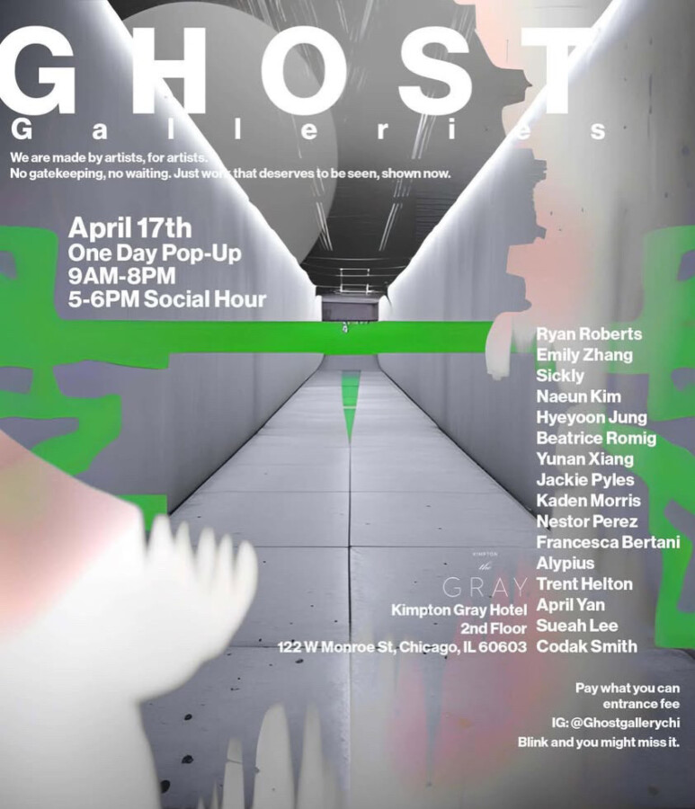

Ghost Gallery; Grand Opening (Ex. 1)
Two weeks from today, Ghost Gallery is having our very first pop up exhibition. 16 talented multimedia artists are gathering for a show at the Kimpton Gray hotel on April 17th. We’re tired of the endless submissions, polite rejections, and silence. So we asked: why not make the gallery ourselves?
Ghost Galleries pops up in borrowed, forgotten, temporary spaces. No gatekeeping. Just artists showing work, together, right now.